The Forehand Volley¶
John Yandell¶
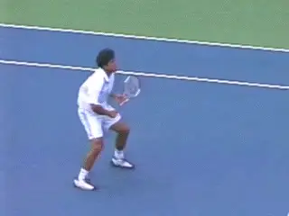
Why are the volleys difficult to understand and to master?
The volley motions may be the most compact in terms of the size of the swings, but understanding them is every bit as challenging as the other strokes. Maybe more so.
In my opinion, most teaching information about how to hit the volley is inaccurate and counterproductive. This may help partially explain why so few players volley confidently and well.
Let's see if we can do something to improve all that. In this article we'll start with the forehand volley. We'll isolate the illusive core elements in the forehand volleys of the best players of the world.
Specifically in this first article, we'll look at the critical and misunderstood role of the hitting arm. Then we'll go on to look at some of the variations and complexities of the forehand volley.
Then we'll take a look at the patterns of the footwork, including the role of the split step, as well as the other critical step patterns before and after leading to the execution of the shot. From there we'll progress to the backhand volley and do the same.
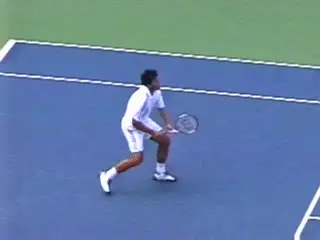
The extreme range of contact heights makes the volleys unique.
The Problem
If the volleys are so compact, why are they also so difficult to understand, teach and execute? There are several reasons.
First, even in the digital video era, there's a lot less video to study. Compared to groundstrokes, returns, and serves, there are, obviously, far fewer volleys hit in the modern pro game, and this is reflected in the available data bases.
The footage in the Stroke Archives shows this. There are about 700 total Rafael Nadal stroke clips. But less than 20 of them are volleys. That's about 3% of the total stroke clips. With Roger Federer there are over 70 volley examples. But that's still less than 10% of the total shots.
A second problem has to do with nature of the video data. Because the motions are so brief, seeing exactly what happens around contact is difficult even in the regular stroke archive footage, which is filmed at 30 frames a second.
Third, the contact point can be over the player's head, or at the level of the ankles, or anywhere in between. That's more extreme than every other stroke in the game. There are also significant variations in the spin. Some volleys are hit quite flat, others with underspin that can exceed 2000rpm. That changes the shape of the swing around contact more than other strokes.
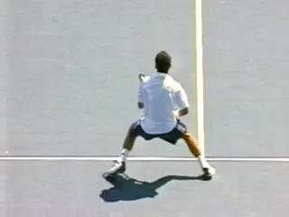
The player's movement, the oncoming ball, and the shot line can all be different diagonals.
Additionally, the players tend to be moving much more directly forward than on any other shots. Often they are coming forward on diagonals that are at sharp angles to the flight of the oncoming ball. And the diagonal of the shot they choose to hit may be in either direction also at a sharp angle to the way they are moving.
Finally, the shot angles the player choose are usually sharper at the net than off the ground. All of this can require significant, rapid adjustments in the shape of directions of the swing patterns.
So it's all more complex than it may appear. That's why I'm so excited about this article, and the corresponding addition we are making to the High Speed Archive. With this issue, we're starting an entirely new data base of high speed footage strictly of the volleys of the top players, all filmed by Advanced Tennis Research in live pro matches (link.)
This footage was shot at 250 frames a second. That's eight times more information than regular video. Together with this series of articles I think this data base will go a long way in helping us understand what really happens at the net and how any player can develop superior technical volleys for themselves. And remember these clips are all downloadable with an online upgrade to Quick Time Pro as we discussed in the article on using the resources of the site. (link.)
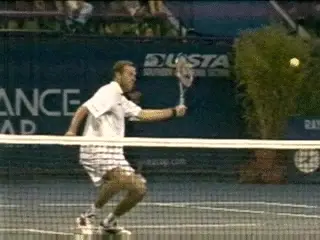
The secret to understanding the volleys--hitting arm position.
Is it Really a Punch?
This lack of good imagery of world class volleys probably contributes to the inaccuracy and ineffectiveness of most terminology used in traditional teaching.
[The two most common volley tips are "Punch the Volley," and "Keep a Firm Wrist." Neither is an accurate description of the actual volley motions.]
Now if hearing one of those phrases makes you volley like Tim Henman, I say great, stick with it. My point is that these common tips don't describe what happens in a world class volley. So if you suspect that your volley could actually improve--and maybe dramatically--these articles will give you clear models of the actual elements in the stroke and some powerful new imagery and terminology to use on the court.
The Secret of the Hitting Arm Position
A detailed study of the high speed footage reveals is that there is a secret to understanding and executing the forehand volley that has gone largely unrecognized in coaching and teaching.
[This secret is the positioning of the hitting arm.] The positioning in the preparation, and especially, in the forward motion to the contact. Let's use the footage to identify how this works for the top players and how to develop it yourself. But before we do, we have to address one other basic question, grips.
Grip
Volley grips are a controversial topic. Virtually all volleys in pro tennis are hit with some version of a mild eastern backhand or continental grip. But which version do the top players use, and which version is right for you?
generated](media_the-forehand-volley/media/image6.jpg)
The relationship between the racket bevels, the heel pad and the index knuckle determines the grip.
To understand we can use the grip terminology we've developed to describe how the hand connects with the racket on the other strokes. To do this we look at how the player positions the index knuckle and the heel pad in relation to the bevels on the grip handles. The pictures show the 8 bevels and the location of the two key points on the hand.
When we look at where these key points are positioned on the bevels by the top players, we see that the strongest volley grip in the pro game today is probably a 2 / 1.
This means the index knuckle is on the second bevel from the top, and the heel pad is mainly on the top of the frame, or bevel 1. But I think even the players with the stronger grips and the index knuckle clearly on Bevel 2 slide part of the heel pad off Bevel 1 and slightly toward the second bevel.
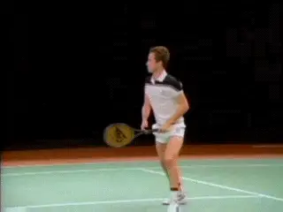
John McEnroe used a mild forehand volley grip that is probably well-suited to most players.
And many players use a slightly milder grip, more like a 2 1/2 / 1 1/2. This means the heel pad is at most halfway on top of the frame, sometimes less, and the index knuckle is straddling the edge between bevels 2 and 3. Even in the footage it's hard to see all this precisely, but I think this discussion at least covers the range of options.
In my experience the mildest grip in this range---the 2 1/2 / 1 1/2--is also the one that works the best for most players, especially below the highest levels of the game. It's the grip used by one of the greatest volleyers of all time, John McEnroe, so it must be pretty effective at the world class level as well.
There are two other important questions regarding grip. First, should a player immediately try to master a true volley grip or should he start with an eastern forehand grip--a 3 / 3 grip in our new terminology?
There are passionate advocates on both sides of this issue, but in my opinion the answer isn't absolute. Yes, you want a true volley grip. But my experience is that many players at the club level who start with some version of a backhand grip never learn to make solid contact.
Instead of hitting through the volley they end up moving the racket too far downward during the swing. The contact point is often late. Frequently the ball pops up and/or floats. This makes it almost impossible to hit a winner at the net.

Pro forehand volley grips fall within a limited range but are tough to define precisely.
If you have these problems on your volley, you need to move to an eastern grip and learn to hit flat, solid volleys with the proper swing line. If you can establish this feel, it can then translate into the motion with a true volley grip.
The other grip issue is whether skilled players who have some version of the volley grip make slight grip shifts from ball to ball. Billie Jean King believes strongly that top players do this, and I think that she is probably correct.
Whether you can train yourself to make these shifts systematically in high speed exchanges--or whether the shifts just happen instinctively--that's another question. But this is secondary to developing the core elements in the forehand volley. So let's address the basic issues for now, and think about subtle, advanced grip shifts later on.

Video demonstration — the original video for this article was hosted on TennisPlayer.net.
The Secret of the Hitting Arm
So now let's get back to the secret: how players position the hitting arm and racket. This is the critical unrecognized element in the forehand volley. But every top pro player uses it. And if you learn what it's about and learn to set it up correctly, it's a magic key that makes a great forehand volley possible at virtually any level.
What do I mean by [hitting arm position? I mean the shape of the hitting arm and racket at the completion of the shoulder turn, and also, how they then move forward together to the contact. I call this hitting arm shape the Open "U."]
This positioning begins at the start of the forehand volley motion. As we saw with the groundstrokes (link), the key to the preparation is to start the motion with the feet and the shoulders.
The motion begins with a step to the side with the outside or right foot combined with a unit turn of the shoulders, arms and racket. At the completion of this unit turn, the hitting arm is set up in the shape that can best be described as an Open "U."
The forearm forms the bottom or base of the "U." [The upper arm and the racket form the legs of the U. The "legs" are both at about a 45 degree angle to the forearm or base.]
[This "U" shape, is the core hitting arm configuration.] It is probably easiest to recognize when the forearm is horizontal, or parallel to the court surface, but as we'll see when we explore all the variations, the "U" can turn and move in different directions and at many different angles.
A Perfect Model
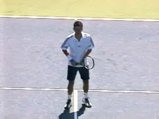
Watch Henman's perfect unit turn and positioning of the hitting arm.
We can thank Tim Henman for giving us a virtually perfect example of this critical first move, how the hitting arm is positioned, and the shape. Look at this animation filmed in the warmup of the Canadian Open in Montreal.
Watch how the outside foot turns until it points sideways at a 45 degree angle. Simultaneously the upper body starts to rotate. Note that as this rotation starts, he keeps both hands on the racket. After the hands separate, the body continues to turn until it reaches a 45 degree angle to the net, roughly the same as the outside foot. The left arm also points across the body at a similar angle.
If you've read the articles on preparation on the forehand in the Advanced Tennis section, you'll realize that this is basically a segment of the same unitary preparation as on the forehand groundstroke. link Rather than the shoulders and feet turning 90 degrees plus, they turn roughly half as far.
Now look at the virtually perfect example of the hitting arm shape. The bottom or base of the "U" is parallel to the court. The upper arm and the racket are at about a 45 degree angle to the base.
Not the position of the racket in relation to the torso. The plane of the racket face is positioned at roughly the edge of the front shoulder. The unit turn has positioned it here with very little additional arm movement.
The Forward Swing
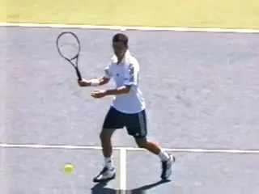
The forward swing with the shoulder driving the hitting arm shape.
So what happens next? Watch that from this position there is a small additional backswing to change the direction of the racket. In my experience, this happens naturally. It's not something the player has to do consciously.
The player needs to know where the racket should be at the critical moments. On the forehand volley, these are the complete of the preparation, the contact, and the end of the forward motion of the hitting arm shape. If you have clear images and checkpoints of these positions, the body will connect the dots. This is why players who try to physically model a backswing on the volley usually end up with far too large a motion.
Contact
Watch how the rear shoulder drives the motion to the contact. The hand, arm and racket rotate forward through the motion as a unit. In essence the palm of the hand and the shoulder are pushing the racket face to the contact. [The critical point is that the hitting arm shape stays constant.]
There is a lot of discussion about players and coaches about "early contact" on the volley. If a player really understands how to use the hand and shoulder to drive the racket, the positioning of the contact tends to take care of itself.
Watch that the hitting arm structure moves forward roughly a foot or a foot and half. So the contact is slightly in front. But too much emphasis on early contact can be a negative because it causes players to extend the arm from the elbow and lose the hitting arm shape.
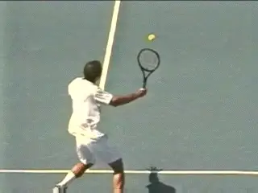
Another look at how the hitting arm retains its shape moving through contact.
Other Angles
Let's see the movement of the hitting arm in the forward swing from another angle looking at a Pete Sampras volley, filmed from behind. Note that Pete has achieved the same elements we just looked at in the preparation phase. These are the unit turn and the creation of the hitting arm position in the shape of the open "U." The racket edge is again around the edge of the front shoulder.
Now watch again what happens. As the hand, hitting arm, and shoulder rotate forward as a unit, the racket is pushed forward to the contact by the palm of the hand.
[The hitting arm shape has remained in tact,] as we saw with the Henman volley. [Note how simple, minimal and compact this forward motion truly is.]
Now look at the angle of the wrist. It has remained laid back so the palm can push the racket head forward. Again, this places the contact point slightly in front of the front edge of the body. From this angle you can see how the forward motion is slightly circular, with the hand racket and arm moving on a curve or an arc from the shoulder.

The finish for the hitting arm position with the butt of the racket pointing off the front leg.
Now look at the isolation of the same movement from yet another angle in the animation of Taylor Dent. Look at the perfect construction of the hitting arm position. Watch the shoulder start to rotate forward, driving this shape to the contact.
This critical core movement is very brief, subtle and hard to see, even with the high speed video. This is in my opinion why the shot is misunderstood. But the structure of the hitting arm and how it is driven through the shot are the absolute central components in learning to hit a technically sound forehand volley.
Watch how the integrity of the shape is maintained through the hit. The rotation of the shoulder drives the hitting arm forward. There is no internal movement in the hitting arm and the shape of the "U' remains unchanged.
From this side view we can see a great checkpoint for maintaining this structure and the pushing motion all the way through the critical part of the motion. Look at the butt of the racket and note how it butt points just past or in front of the edge of the front leg. This forms the final checkpoint to master in developing the core motion.
[THE 3 KEY POSITIONS FROM 3 DIFFERENT VIEWS]
Turn Contact Finish 
![A person playing tennis Description automatically generated with medium ![A person hitting a ball with a tennis racket Description automatically
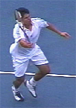
Traditional Phrases
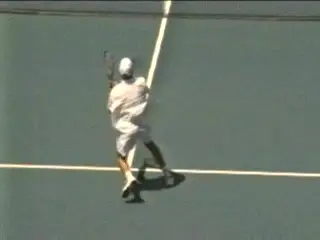
Terms like "Punch" and "Firm Wrist" don't correspond with how the volley is actually hit.
Once we understand the shape and the motion of the hitting arm, we can see why the traditional teaching descriptions of the forehand volley don't make sense. The idea that the volley is a "punch" creates the belief that the key motion is to straighten out the arm and extend it forward from the elbow.
This destroys the integrity of the hitting arm shape. The arm now forms a straight line rather than an open "U." The idea of simply extending the arm in a punch also tends to take the push or the rotation of the back shoulder out of the shot. In my opinion, you couldn't think of a better phrase than "punch" to make sure you'll never execute the actual technical elements of a good forehand volley.
There are similar problems with the second major teaching idea--"keep the wrist firm." As we can see the wrist is actually laid slightly back. This is a fundamental aspect of creating the open "U" shape. It's what allows the player to make contact slightly in front with the racket face more or less square to the ball.
[Without this laid back wrist position, the ball will get past the front edge of the body and the contact will be late.] If that happens, yes, you better keep your wrist firm--really firm. You'll need to be quite tense to compensate for the flaws in your motion and in your timing that created the late contact.
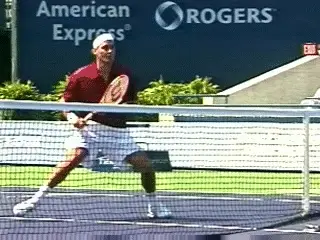
But how do we account for the wild range of forehand volley variations?
Not That Simple
So is that really all there is to it? If it's that simple why haven't more people picked up on the hitting arm concept and why don't players and coaches notice it when they watch the top players? Doesn' it seem that there is often a lot more backswing and a lot more followthrough on many or most volleys than in the examples I've given?
What about the way the forearm rotates or supinates backwards before the forward swing--especially with the bigger backswings--and then forward into the shot? Doesn't the wrist break and come forward on many forehand volleys? What about when the ball is super high or super low?
What about underspin? Doesn't the angle and shape of the arm and racket change during the forward swing to create spin? Doesn't the racket face slide under the ball and open up during and after the contact? How do you account for all of these factors in the theory of the hitting arm shape?
All of the above questions and comments are valid. Actually they don't invalidate or contradict the role of the basic elements I've identified. But the focus on the complexities are a major source of the difficulties most people have trying to develop the volley. So go back the sequence photos and master the three key positions with the check points. Then watch the magic start to happen.

The 3 key positions: Turn, Contact, Finish
As I said at the beginning, there is probably more variation in the actual swing shapes in the volley than in any other shot. Bill Mountford has already written an excellent article for TPA that outlines many of these specific differences used situationally by all the top players. (link.)
These complexities and variations are what we are going to look at closely in the upcoming articles. We'll see how the hitting arm position expands and contracts, how it rotates backwards and forwards, what happens with different ball heights, and spins, how the shape of the swing changes, and more, including the many footwork variations, some including split steps and some not.
But in looking through this forest, let's not lose site of what all the trees have in common. We've identified a magic core dimension in this motion, and you can use it build a rock solid forehand volley at any level of play. Work on that and Stay Tuned!

John Yandell is widely acknowledged as one of the leading videographers and students of the modern game of professional tennis. His high speed filming for Advanced Tennis and TPA have provided new visual resources that have changed the way the game is studied and understood by both players and coaches. He has done personal video analysis for hundreds of high level competitive players, including Justine Henin-Hardenne, Taylor Dent and John McEnroe, among others.
In addition to his role as Editor of TPA he is the author of the critically acclaimed book Visual Tennis. The John Yandell Tennis School is located in San Francisco, California.